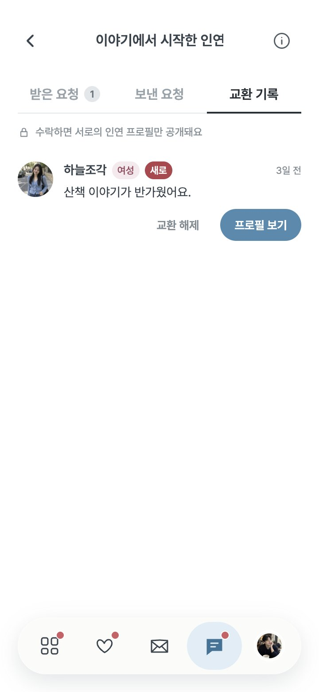
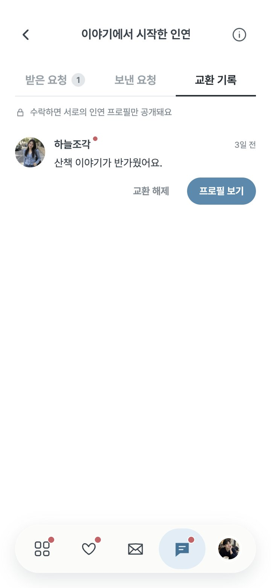

이야기에서 시작한 인연 · 교환 기록 줄
- 지금: 닉네임 옆에 성별 칩("여성") + 새로 바뀐 줄엔 장미색 "새로" 칩.
- 바꾸는 것: 성별 칩은 빼요(교환 상대는 늘 이성이라 정보가 없어요). "새로" 칩도 빼고 닉네임 오른쪽 위에 지름 6 점.
- D1 빨강 점(red-500): 하단 메뉴 · 알림 종의 새 소식 점과 같은 색 — 앱 전체에서 "안 본 것"이 한 가지 신호로 통해요.
- D2 파랑 점(sky-500): 덜 급해 보이지만 다른 새 소식 점과 색이 달라져요.
- 점은 교환 기록을 한 번 보면 사라지는 지금 "새로" 규칙 그대로.
줄만 크게
지금여성 칩 + 새로 칩D1닉네임 오른쪽 위 빨강 점D2닉네임 오른쪽 위 파랑 점
전체 화면

지금교환 기록
D1빨강 점D2파랑 점